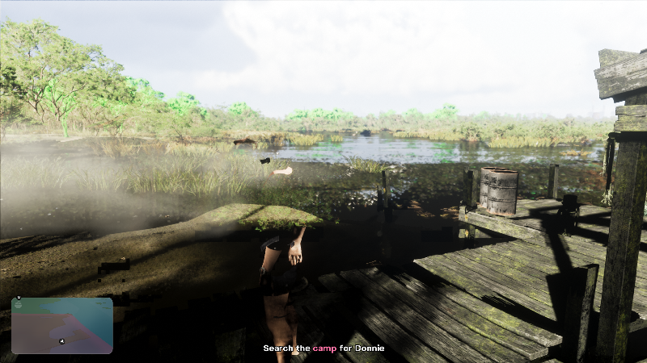

水面高度查询读到了两份模拟输出
两种网格尺寸下，任务的原版水面高度查询都会用到两份输出。遮挡查询仍收到固定的返回值，图形组正在改为读取 GPU 实测结果。快艇追逐能否从头开到终点，仍待验证。


用了四次游戏提供的跳过检查点选项，角色才到达码头。在地图上，前推和后拉摇杆会使岸线和营地建筑向相反的方向移动；松手后，地标保持稳定。当前目标仍是在营地寻找唐尼。
此前已能举起望远镜并转动视野。快艇追逐仍会失败，画面也有部分区域被黑块遮住。
查看营地实测 →两种网格尺寸下，任务的原版水面高度查询都会用到两份输出。遮挡查询仍收到固定的返回值，图形组正在改为读取 GPU 实测结果。快艇追逐能否从头开到终点，仍待验证。
又进行了四次前进操控，每次十秒。岸线横向移动 4.95 像素、纵向移动 2.98 像素；同一张地图上的营地建筑分别移动 4.92 和 2.85 像素。此时游戏仍显示“在营地搜索唐尼”。 查看营地实测 →
固定地图缩放后，向前推摇杆时，岸线向右移了 1.19 像素、向下移了 0.90 像素。向后推时，它向左移了 1.16 像素、向上移了 0.96 像素。六处地标的位移方向都随之反转。松开操控后的 16.836 秒内，地标保持稳定。目前还没有找到唐尼。 查看营地实测 →
快艇任务失败后，游戏再次给出跳过检查点的选项。进入营地，教程提示玩家蹲下并安静移动。画面中能看到码头、木桶、树林和湿地，但数处景物仍被黑色矩形遮住。 查看码头画面 →
第三次跳过检查点后，即使不碰方向和油门，岸线也会向后移动。地图确认此时的目标只是留在船上。随后游戏仍提示快艇无法驾驶。
以下为各项工作的分工和最近确认时间，均为 UTC。
对比任务重试结果，分别记录快艇操控效果和跳过检查点带来的进度。
用正反向操控和松杆对照确认了营地步行。目前仍在寻找唐尼。
正在让任务读取 GPU 实测的遮挡查询结果。目前任务收到的是固定值。
已确认在测试的两种网格尺寸下，原版水面高度查询都会读取两份模拟输出。
对比了任务实际用到的 140 个计算着色器。两个版本都成功创建了 134 条管线，实机画面效果还有待测量。
核对两张实机截图、检查点顺序和步行测量结果，更新中英文记录。
已交付部分页面复制优化和流式纹理改动。在一次混合负载回放中，速度提高到原来的 1.92 倍，输出一致。13 项纹理及资源归属检查全部通过。
每 30 分钟查看相关项目的改动。已定位 180 次光照绘制共用的输入。
每小时检查其他实现。最近一次对比表明，目前适合继续使用 VIctory。
已完成内存边界复核和四项 CPU 检查，下一次包内容变更后再复核。